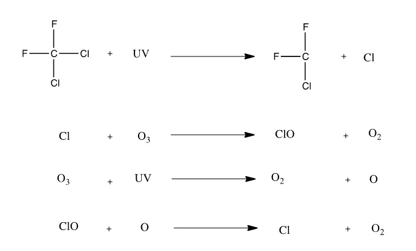

How A Freezer Works Video
Components of a Freezer
| Name | Picture | Purpose |
|---|---|---|
| Compresser | Compresses vaporized refrigerant after refrigerant cycle | |
| Condenser Coils |  |
Condenses refrigerant into liquid |
| Evaportator Coils |  |
Located inside the freezer, refrigererant passes through as it evaporates | Expansion device |  |
Causes refrigerant to rapidly evaporate as it enters a low pressure zone |
| Refrigerant | A material with a low boiling point; wicks heat away from inside the freezer |
Freezers work using refrigerant that absorbs heat when it is evaporated.
Refrigerant is heated and pressurized by a compressor.
This hot gas then passes through a condenser, which condenses it into a liquid.
Then this liquid passes through an expansion device, which causes this liquid to evaporate and cool down, this cool gas is then passed through the evaporator coils (located inside the freezer).
While in the evaporator coils, the refrigerant absorbs the heat out of the freezer, making it cold again then goes back into the compressor, and the cycle repeats itself.
The Science behind Refrigerant
How Refrigerant Works
So, what is the magic material, refrigerant, that keeps our food ice cold. Well, refrigerant really isn't that complicated. All refrigerant is is a material with a extremely low boiling point. R-134a, the refrigerant we are currently using in refrigerators, has a boiling point of -15.34 degrees Farienheight. However, this boiling point is increased significantly when pressure is applied, in a freezers case the compresser. This refrigerant absorbs the heat of the freezer because when it boils after it loses pressure (beacause the boiling point is reduced) from passing through the expansion device and absorbs heat in the freezer.
R12 and the Ozone Layer
I said in the history segment that there used to be another coolant, R-12. Why was that replaced? Well, R-12 was a CFC (chlorofluorocarbon) which were found to destroy the ozone. R-12 was actually the one of the worst CFCs because it stayed in the ozone for an extended period of time, destroying ozone molecules, and preventing new ones from forming with a series of chemical reactions.
Different Types of Refrigerant
- R134a, HFC
- R125, HFC
- R12, CFC
- Sulfur Dioxide
- R717, Ammonia